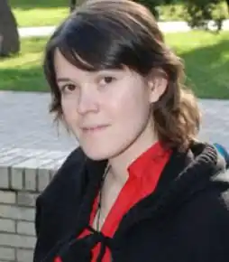
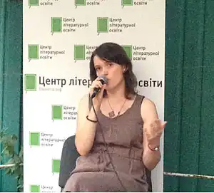

Богдана Матіяш — поетка, перекладач, редактор видавництва й часопису "Критика", представник київської редакції часопису "Український журнал" (Прага).
Має старших сестер Софію (Раду) Матіяш і Дзвінку Матіяш.
1998—2004 — навчалася в Національному університеті "Києво-Могилянська академія". 2004 року закінчила магістерську програму "Філологія. Історія, теорія літератури та компаративістика". Тема магістерського диплому "Мовчання як текст: від герметичності до діалогу". 2004—2008 — аспірантка кафедри філології Києво-Могилянської академії. Авторка поетичних книжок "Непроявлені знімки" (2005), "розмови з Богом" (2007). Кость Москалець назвав "розмови з Богом" найсенсаційнішим поетичним виданням 2007 року, а Андрій Бондар припустив, що "розмови з Богом" "із плином часу стануть культовою книжкою, як стали такими, приміром, перша збірка Олега Лишеги "Великий міст" або "Діти трепети" Василя Герасим’юка". Фрагменти "розмов із Богом" перекладено словацькою, білоруською, польською, англійською та німецькою мовами. Народилася, живе та працює в Києві.